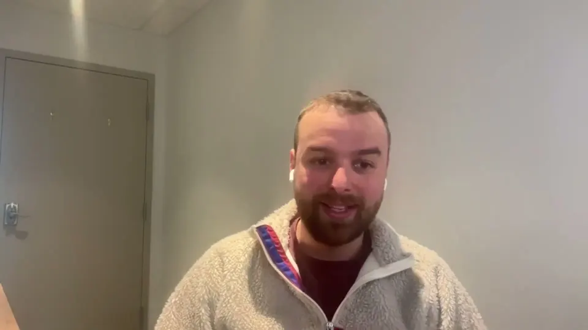

Charles Demontigny
Fondateur de QuébGPT (anciennement Fluxion Conseil), créateur du chatbot Capture
Episode with Charles

QuébGPT : Révolutionner les PME avec l’IA – ft Charles DemontignyA Québec founder explains why SMEs struggle with AI, where Québec stands in the AI race, and what his lead-capture chatbot taught him.Charles DemontignyFondateur de QuébGPT (anciennement Fluxion Conseil), créateur du chatbot CaptureIn Charles’s words
If fixing your problem with AI costs $50,000, there may be no return at all.
Ils ont un problème puis ils ont l'impression qu'il faudrait le régler avec de l'IA, mais si ça va coûter 50 000 le régler, il n'y aura pas de retour sur investissement.Nobody in Québec trains foundation models from scratch. Is the province already behind?
Tu sais, le Québec il y a personne qui entraîne des modèles de zéro. Fait que sur l'IA générative, on est clairement en retard et même sur l'IA en général, dans les entreprises, moi, ce que je vois, c'est juste beaucoup de retard.Open models are nice. The harder job is helping people change jobs fast.
Concrètement, on s'entend qu'il y a des jobs qui vont tomber et qu'il y a des inégalités qui vont peut-être être créées. À la fois, oui, les modèles peuvent être ouverts et tout ça, c'est intéressant. Ça peut que ça soit abordable ou peu importe, mais il va falloir entraîner les gens à être capables de changer d'emploi rapidementReading invoices took thousands of lines of code. Then OpenAI's API did it in a hundred.
J'avais peut-être, je ne sais pas, quatre milles de code pour faire ça. Puis finalement, avec l'API d'OpenAI, tu pouvais le faire genre, je ne sais pas, cent lignes de code, peu importe. C'était vraiment magique.A joke chatbot that spoke Québécois launched an AI company.
J'ai sorti un chatbot en blague le 1er avril qui s'appelait KebGPT, qui était juste un chat qui parlait Keb. Dans le temps, le monde ne comprenait pas encore comment ça marchait parce que ça venait de sortir.Small businesses rarely have an AI problem. They have too few clients or too many.
Comme je dis souvent à l'interne ici, c'est que souvent, on a trop de clients puis souvent, on en a pas assez. Puis c'est souvent ces deux problèmes-là.Québec had top AI research and still did not turn it into products.
il y a quelques années on se vantait au Québec d'être le nec plus ultra de l'IA avec Element AI et juste ça en fait. Il y avait pas mal juste ça. L'Université de Montréal qui avait de la bonne recherche puis force à admettre pas été capable de faire passer cette recherche-là en produit.Québec may not win with its own AI model. Cheap electricity could matter more.
Peut-être que c'est en dessous parce que, tu sais, on a de la bonne électricité pas chère, peut-être qu'on est capable d'attirer l'entreprise grâce à ça. Puis sinon, c'est peut-être en haut au niveau des applications, de l'applicatif parce que, tu sais, entre le modèle et ce qui va être dans 5-10 ans, les modèles de base, ça va être un peu commodité selon certains.95% of website visitors just want information, and nobody is there to give it.
la réalité, c'est 95% des visiteurs de site web sont là pour aller chercher de l'information, donc si on a une IA sur notre site pour répondre à ces questions-là, on est capable d'aller répondre à une partie de ces gens-là et de les transformer en clients.Getting an AI chatbot to 80% takes one prompt. The last 20% is the job.
ce qui est bon et pas bon pour nous, c'est faire la job à 80%, c'est hyper simple aujourd'hui. Tu mets un prompt dans un chat puis ça va répondre. Est-ce que ça va atteindre tes objectifs d'affaires la majorité du temps? Non.A chatbot that knew less sold more. Here is why.
Puis au final, un peu par hasard, en fait, il y a des clients qui mettaient moins d'informations puis ça convertissait plus parce que souvent, il donne un peu de valeur puis après ça, il ne sait pas l'autre réponse.Anyone can build a chatbot, like anyone can build a Wix site. Few get results.
Ça fait que même si aujourd'hui, c'est un peu comme un site web, tu sais, tu pourrais, n'importe qui peut aller sur Wix et créer un site web. Est-ce que tu vas avoir un site web qui convertit en malade? Probablement pas si t'as pas une certaine structure puis une certaine expertise.Installing an AI note-taker will not fix your business problems.
En tout cas, il y a plein de solutions qui finalement ils règlent partiellement les problèmes et ce n'est pas magique.Before leading on AI globally, Québec should clean its own room first.
je pense qu'on a quand même de la job à faire juste pour nettoyer notre propre chambre à la maison. Peut-être commencer par ça et après ça, si on est capable d'être une société que les gens peuvent regarder et se direSome clients get 50 to 60 new leads a month from chatbot conversations alone.
On a des clients qui vont chercher entre 50 et 60 nouveaux leads tous les mois grâce à Captur qui partent d'une conversation. Ce n'est pas non plus cannibalisé par les formulaires parce que quand tu remplis un formulaire, tu n'as pas une question que tu veux que quelqu'un, que tu veux booker un meeting.